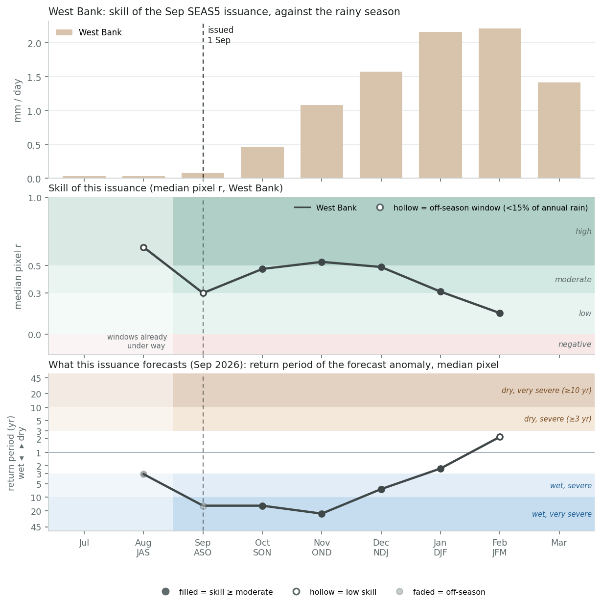
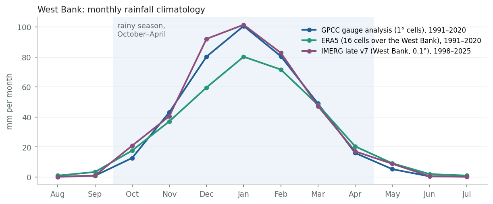
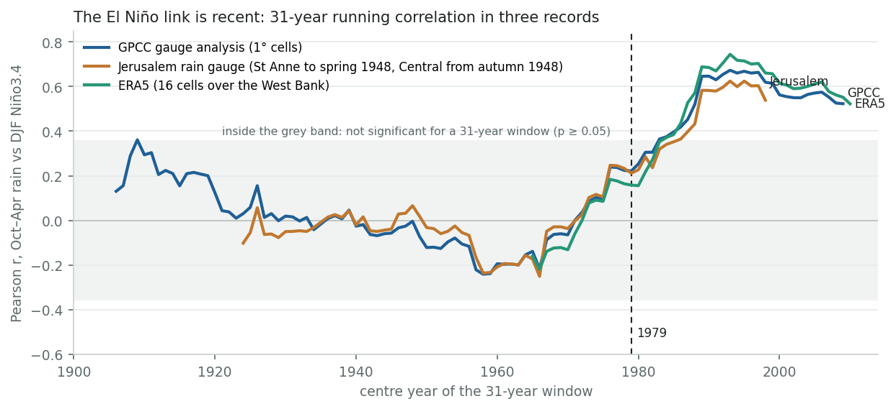
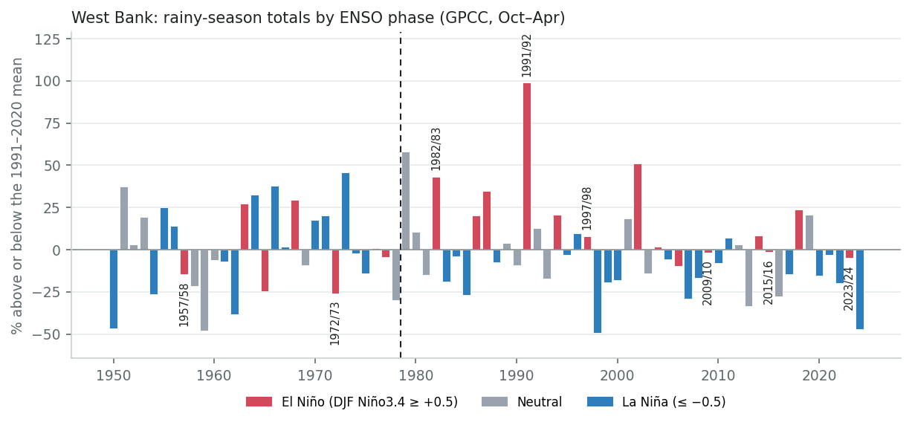
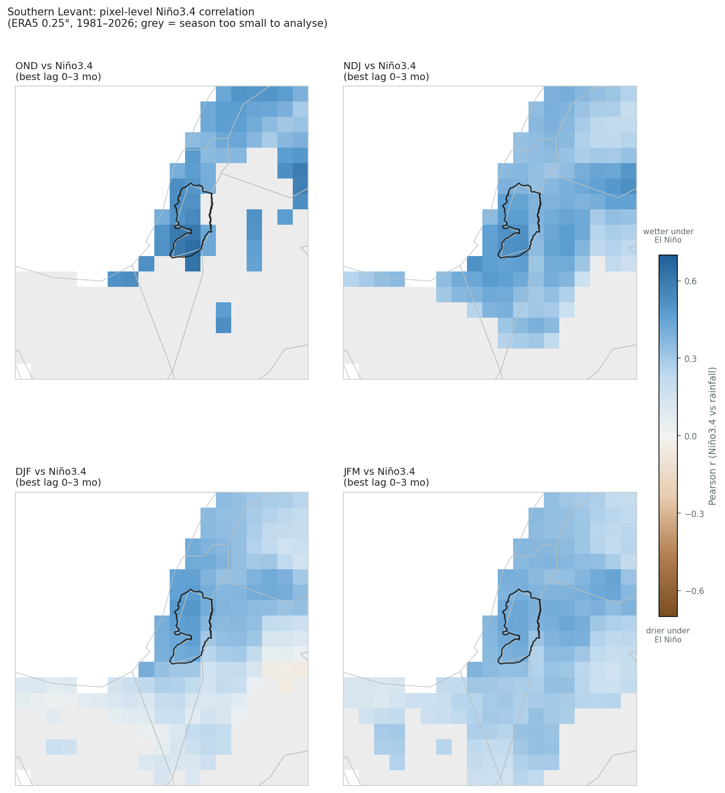
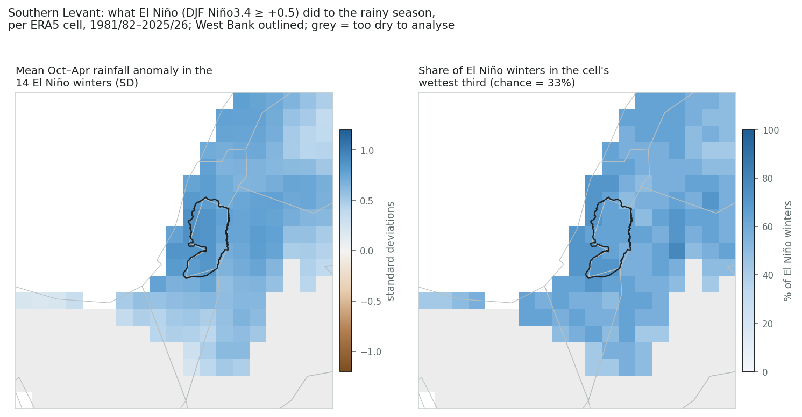
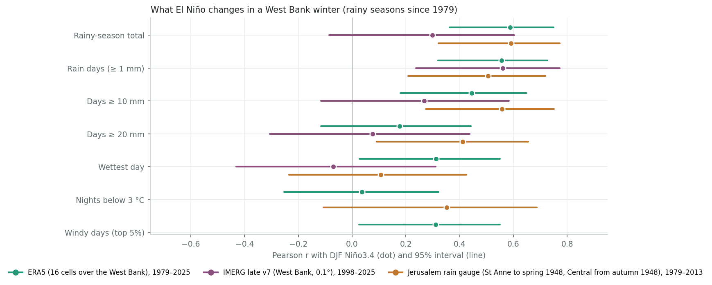

ENSO country deep dive
West Bank
Survey catalogue says
El Niño → wetter, DJF
single-study source: Mariotti, Zeng & Lau 2002 (GRL); “Price, Stone & Rind 1998 (J. Climate)” as cited (see below)
This review assesses
El Niño → wetter, Oct–Apr, strongest Oct–Dec
moderate Gauge records and ERA5 agree since 1979 (r = +0.57 to +0.59); no positive link before 1979; strong El Niños since 1979 were normal to wet in GPCC.
1. What the forecasts say. A very strong El Niño is under way. Every multi-model forecast checked favours above-normal rain over the southern Levant in October–December (40–70% for the wet tercile), with weaker odds in November–January and no wet signal for December–February. All favour a warm winter. Over the West Bank, SEAS5's September forecast puts October–December at a 23-year wet return period with high skill, and October alone is the 3rd-wettest of 46 September forecasts. After December both the signal and the skill fade.
2. How much El Niño matters. Since 1979, clearly. The GPCC gauge analysis, the long Jerusalem gauge and ERA5 correlate at +0.57 to +0.59 with winter Niño3.4. 9 of the 14 El Niño winters fell in the West Bank's wettest third, against none (GPCC) or one (ERA5) in the driest. Before 1979 the same records show no positive link. None of the six strong El Niños since 1979 was in the driest third in GPCC or at Jerusalem, though ERA5 puts 2009/10 just inside its driest third and IMERG puts 2015/16 there. The two wettest, 1982/83 and 1991/92, followed major volcanic eruptions; 1997/98 was wet, and the other three near normal.
3. What changes in an El Niño winter. More rain days: about 14 more than in a La Niña winter in ERA5, and 10 more at the Jerusalem gauge. There are also more days of 10 mm or more, and at Jerusalem more days of 20 mm or more. The single wettest day and cold nights show no consistent link.
4. What winter weather does in the West Bank. Far less than in Gaza, and it is poorly counted. The worst pre-war winters brought floods (January 2013: about 1,000 homes damaged, 4 deaths) and snow (Storm Alexa, December 2013). In three winters since October 2023, the UN has quantified one West Bank weather event: on 28–30 December 2025, at least 66 households in 18 herding communities lost tents and animal shelters or had them damaged. Winter deaths there have come from flash floods and heating fires; no hypothermia death was found.
5. What this winter could bring. A wet first half is the most likely El Niño outcome: a storm of 20 mm or more came before December in 7 of 8 El Niño winters. The most exposed groups are:
- herding and Bedouin communities in Area C, part of the 315 Area C communities (about 216,000 people) the Shelter Cluster assessed, where more than 2,200 shelters need urgent repair;
- more than 33,000 people displaced from the northern refugee camps, most of them renting.
Snow is less likely in a warm winter but not ruled out. No West Bank-specific winter plan had been published by early October.
About the catalogue row. The survey's Palestine row was computed on the Natural Earth polygon for the West Bank, so it does describe this page's area; its ERA5 value was OND +0.56. Its second citation is garbled: the paper is Price, Stone, Huppert, Rajagopalan & Alpert (1998) in Geophysical Research Letters. And Mariotti et al. (2002) found the El Niño autumn wet signal in the western Mediterranean. The grade here rests on this page's records and on the Israel-specific literature.
1. What the forecasts say for this winter
Latest Niño3.4 in NOAA PSL's current series: +1.89 °C for August 2026 (three-month mean +1.73). The historical analysis on this page uses the series' pinned Niño3.4 (ERSST v5 basis, about 0.2 °C cooler than the current ERSST v6 series), and HadISST only where a record starts before 1950.
NOAA's September outlook gives El Niño 100% odds for every season through January–March 2027. It has the event peaking in October–December, with a median relative Niño3.4 of +2.67 °C and a 75% chance of exceeding +2.5 °C, which no event since 1950 has done. It then weakens to about +1.8 °C by January–March. A positive Indian Ocean Dipole is developing and is expected to fade by early 2027. The coming winter is likely to be a stronger El Niño than any the relationships below were fitted on.
The multi-model forecasts below are the same southern-Levant readings as on the Gaza page. They show wet odds for October–December, weaker for November–January, no wet signal for December–February (NMME leans dry), and a warm winter throughout. A warm winter makes snow on the hills less likely, but it does not stop cold spells.
| Forecast | Issued | Oct–Dec | Nov–Jan | Dec–Feb | Temperature |
|---|---|---|---|---|---|
| C3S multi-system (9 models) | Sep 2026 | wet 50–60% | wet 40–50% | no signal | warm 60–100% |
| ECMWF SEAS5 | Sep 2026 | wet 50–60% | no signal | no signal | warm 70–100% (Nov–Feb) |
| NMME (NOAA) | Sep 2026 | wet 50–60% | wet 40–50% | dry 40–60% | warm 50–90% |
| IRI (calibrated NMME) | Sep 2026 | wet ≥ 70% | wet 40–45% | no signal (Jan–Mar: no signal) | warm 45% to ≥ 70% |
| WMO Lead Centre LRF-MME (11 centres, 2.5° cells) | Sep 2026 | wet 40–50% | no signal | no signal (dry 40–50% offshore) | warm 70% to ≥ 80% (Nov–Feb) |


Tercile probabilities for the wet (AN) or dry (BN) category over the southern Levant, read from the legend classes of each centre's published maps; most models' grid cells are larger than the West Bank's hill country. “No signal” means no category above 40%. Compiled 30 September 2026. The October issuances and the Mediterranean Climate Outlook Forum's late-November consensus will update them.
SEAS5 for the West Bank: skill and the September 2026 forecast
Over the West Bank, the September 2026 SEAS5 issuance forecasts a wet start to the season. September–November is at a 15-year wet return period, October–December at 23 years with high skill (r = 0.53), and November–January at 7 years. December–February is only slightly wet (2 years, moderate skill), and January–March slightly dry with low skill. The raw ensemble-mean files give the same picture independently of the app's cube: September–November and October–December are each the 5th-wettest of 46 September forecasts since 1981. SEAS5's wettest September–November hindcasts for the area are 1997, 2015 and 1982, the strongest El Niños in its record. (The skill table counts 17 cells, every 0.25° cell touching the West Bank; the ERA5 series uses the 16 that cover more than 0.5% of it.)
What the Sep 2026 issuance forecasts. Windows at or beyond the app's 3-year return-period threshold (in-season windows excluded): SON wet 15 yr (moderate skill), OND wet 23 yr (high skill), NDJ wet 7 yr (moderate skill). Under the app's rule — an alert needs the return period and at least moderate skill — this issuance would raise an alert for SON, OND, NDJ.

| Zone | Cells | JAS in-season | ASO in-season | SON 0-mo lead | OND 1-mo lead | NDJ 2-mo lead | DJF 3-mo lead | JFM 4-mo lead |
|---|---|---|---|---|---|---|---|---|
| West Bank | 17 | +0.63 high 100% ≥ mod. · wet 3.1 yr | +0.30 low 41% ≥ mod. · wet 15.3 yr | +0.48 moderate 100% ≥ mod. · wet 15.3 yr | +0.53 high 100% ≥ mod. · wet 23.0 yr | +0.49 moderate 100% ≥ mod. · wet 6.6 yr | +0.31 moderate 59% ≥ mod. · wet 2.3 yr | +0.15 low 0% ≥ mod. · dry 2.2 yr |
Each cell: median pixel r, its bin, the share of the zone's cells at moderate-or-better skill, and the median return period of the Sep 2026 forecast anomaly (dry = forecast below its hindcast median). Skill source: skill_stats_grid_detrended.nc (seas5-skill, DEV blob), the same cube behind the app's pixel skill map. Median of pixel correlations, not the correlation of the area mean, so it is a conservative summary for a coherent area.
Cross-check from the raw ensemble-mean files (box 31.2–32.6°N, 34.8–35.6°E), Sep issuances 1981–2026: where the 2026 forecast ranks among all 46 (1 = wettest), its ratio to the hindcast mean, and the three wettest hindcast years.
| Window | Rank | Ratio to mean | Wettest hindcasts (issuance year) |
|---|---|---|---|
| SON | 5 of 46 | 1.38 | 1997, 2015, 1982 |
| OND | 5 of 46 | 1.23 | 2015, 1997, 2002 |
| NDJ | 16 of 46 | 1.07 | 1982, 1991, 1986 |
| DJF | 22 of 46 | 0.99 | 1986, 2014, 2009 |
| JFM | 33 of 46 | 0.95 | 1986, 1982, 2014 |
The same forecast, month by month
By month, the wet signal sits in October (about double the hindcast mean, the 3rd-wettest of 46 September forecasts) and November (+22%, the 10th). December is slightly wet and January–March slightly dry. Skill for single months is low in the rainy months except November, so read the monthly split as a guide to where the three-month signal sits.

| Month | Hindcast mean | Forecast | vs mean | Rank (1 = wettest) | Skill r | ERA5 mean, West Bank |
|---|---|---|---|---|---|---|
| Sep | 2 mm | 2 mm | −4% | 25 of 46 | +0.48 moderate | 3 mm |
| Oct | 12 mm | 23 mm | +99% | 3 of 46 | +0.25 low | 17 mm |
| Nov | 36 mm | 44 mm | +22% | 10 of 46 | +0.31 moderate | 38 mm |
| Dec | 55 mm | 59 mm | +8% | 14 of 46 | +0.14 low | 56 mm |
| Jan | 61 mm | 60 mm | −2% | 24 of 46 | +0.07 low | 77 mm |
| Feb | 49 mm | 44 mm | −9% | 36 of 46 | +0.14 low | 72 mm |
| Mar | 33 mm | 30 mm | −8% | 33 of 46 | +0.22 low | 50 mm |
SEAS5 ensemble-mean totals are smoother than any single year, so compare the forecast with the hindcast mean and rank, not with observed rainfall. ERA5 mean: the 16 cells over the West Bank, same years, for scale.
2. How much El Niño matters for a West Bank winter
The West Bank's rain falls between October and April, mostly from December to February. The hills rise to 700–1,000 m and drop steeply east to the Jordan Valley, about 300 m below sea level, and rainfall more than halves from the western slopes to the valley. This section uses four records:
- the GPCC gauge analysis;
- the Jerusalem rain gauge (St Anne to spring 1948, Jerusalem Central from autumn 1948 to 2015), which is one of GPCC's inputs;
- ERA5 over the 16 cells covering the West Bank, a reanalysis that assimilates no rain gauges;
- IMERG.

The link switched on in the late 1970s
Since the late 1970s, yes; before that, no. Since 1979 the correlation between the October–April total and December–February Niño3.4 is +0.57 in GPCC (to 2024/25), +0.59 at the Jerusalem gauge (to 2013/14) and +0.59 in ERA5 (to 2025/26). Each is significant at p < 0.001 and unchanged by detrending. Before 1979 the same records give −0.03 (GPCC, from 1891), −0.16 (Jerusalem, from 1909) and −0.21 (ERA5, from 1950). Over each full record the correlation is weak (+0.16 to +0.30). As in Gaza, the switch shows in the gauge records as well as the reanalysis.
The literature found the same break. Price et al. (1998) saw significant correlations only in the last 25 years of their Israeli record, and Alpert et al. (2005) found no connection before the 1970s. A 2026 Israel Meteorological Service technical report (not peer-reviewed) finds r ≈ 0.50–0.55 over the last 50 years, strongest in the Judean hills, the Shephelah and the northern Negev. IMERG (1998–) agrees on the sign but is weaker (r = +0.30, not significant over 28 winters).

| Record | Winters | Niño3.4 | r | p | r, detrended |
|---|---|---|---|---|---|
| GPCC gauge analysis (1° cells) | 1891/92 – 1978/79 | HadISST | −0.03 | 0.769 | −0.05 |
| GPCC gauge analysis (1° cells) | 1979/80 – 2024/25 | ERSST v5 (pinned) | +0.57 | <0.001 | +0.58 |
| GPCC gauge analysis (1° cells) | 1998/99 – 2024/25 | ERSST v5 (pinned) | +0.50 | 0.009 | +0.52 |
| GPCC gauge analysis (1° cells) | 1891/92 – 2024/25 | HadISST | +0.19 | 0.029 | +0.20 |
| Jerusalem rain gauge (St Anne to spring 1948, Central from autumn 1948) | 1909/10 – 1978/79 | HadISST | −0.16 | 0.182 | −0.16 |
| Jerusalem rain gauge (St Anne to spring 1948, Central from autumn 1948) | 1979/80 – 2013/14 | ERSST v5 (pinned) | +0.59 | <0.001 | +0.57 |
| Jerusalem rain gauge (St Anne to spring 1948, Central from autumn 1948) | 1909/10 – 2013/14 | HadISST | +0.16 | 0.099 | +0.17 |
| ERA5 (16 cells over the West Bank) | 1950/51 – 1978/79 | HadISST | −0.21 | 0.277 | −0.21 |
| ERA5 (16 cells over the West Bank) | 1979/80 – 2025/26 | ERSST v5 (pinned) | +0.59 | <0.001 | +0.59 |
| ERA5 (16 cells over the West Bank) | 1998/99 – 2025/26 | ERSST v5 (pinned) | +0.48 | 0.009 | +0.47 |
| ERA5 (16 cells over the West Bank) | 1950/51 – 2025/26 | HadISST | +0.30 | 0.009 | +0.30 |
| IMERG late v7 (West Bank, 0.1°) | 1998/99 – 2025/26 | ERSST v5 (pinned) | +0.30 | 0.124 | +0.27 |
Is the change real? A Fisher z-test for the difference between the correlations before and after 1979: ERA5 z = 3.6, p < 0.001; GPCC z = 3.6, p < 0.001; Jerusalem gauge z = 3.9, p < 0.001. The 1979 break was not chosen blind: it is where the literature places the change (Price et al. 1998; Alpert et al. 2005) and the start of the satellite era. p-values for the period after the break are conditional on choosing it; the full-record rows show what an unsplit analysis gives.
What El Niño winters have looked like since 1979
Since 1979, 9 of the 14 El Niño winters in GPCC fell in the West Bank's wettest third and none in the driest; in ERA5, 9 and one. La Niña winters ran the other way: 2 of 19 in the wettest third and 11 in the driest. Before 1979 El Niño winters were spread evenly (9 wettest, 7 driest of 25).

| Record, period | ENSO phase | Winters | Wettest third | Middle third | Driest third |
|---|---|---|---|---|---|
| GPCC, 1891/92 – 1978/79 | El Niño | 25 | 9 | 9 | 7 |
| GPCC, 1891/92 – 1978/79 | Neutral | 37 | 12 | 11 | 14 |
| GPCC, 1891/92 – 1978/79 | La Niña | 26 | 9 | 9 | 8 |
| GPCC, 1979/80 – 2024/25 | El Niño | 14 | 9 | 5 | 0 |
| GPCC, 1979/80 – 2024/25 | Neutral | 13 | 5 | 4 | 4 |
| GPCC, 1979/80 – 2024/25 | La Niña | 19 | 2 | 6 | 11 |
| ERA5, 1979/80 – 2025/26 | El Niño | 14 | 9 | 4 | 1 |
| ERA5, 1979/80 – 2025/26 | Neutral | 13 | 4 | 5 | 4 |
| ERA5, 1979/80 – 2025/26 | La Niña | 20 | 3 | 7 | 10 |
Terciles are computed within each period, so each period is judged against its own climate. Phase from December–February Niño3.4 (±0.5 °C): HadISST before 1979, the pinned ERSST v5 series from 1979. On HadISST, 16 winters since 1979 count as El Niño rather than 14, and 11 of them were in the GPCC wettest third.
Every strong El Niño winter since 1950
None of the six strong El Niños since 1979 was in the driest third in GPCC or at the Jerusalem gauge, a stronger result than in Gaza. Two of the other records disagree for single winters: ERA5 puts 2009/10 just inside its driest third (32nd percentile), and IMERG puts 2015/16, the strongest event in the record, there too (21st percentile). The Israel Meteorological Service says a dry 2026/27 “like 2015/16” cannot be ruled out. The two wettest strong events both followed major volcanic eruptions: 1982/83, and 1991/92, Jerusalem's wettest winter on record, with heavy snow in February 1992. That makes them doubtful analogues for a winter forecast to be warm. 1997/98 was wet in GPCC and ERA5 but normal at Jerusalem; 2009/10, 2015/16 and 2023/24 were near normal in GPCC. The two strong events before 1979 were dry or normal.
| Winter | Niño3.4 DJF | GPCC | ERA5 | Jerusalem | IMERG | Note |
|---|---|---|---|---|---|---|
| 1957/58 | +1.5 | 323 mm 31st pct · driest | 248 mm 17th pct · driest | 340 mm 17th pct · driest | — | |
| 1972/73 | +1.7 | 281 mm 21st pct · driest | 295 mm 45th pct · middle | 452 mm 34th pct · middle | — | |
| 1982/83 | +2.2 | 542 mm 93rd pct · wettest | 440 mm 89th pct · wettest | 866 mm 97th pct · wettest | — | |
| 1991/92 | +1.8 | 751 mm 100th pct · wettest | 529 mm 100th pct · wettest | 1117 mm 100th pct · wettest | — | Pinatubo erupted in June 1991; Jerusalem's wettest winter on record, heavy snow in February 1992. |
| 1997/98 | +2.2 | 408 mm 70th pct · wettest | 432 mm 85th pct · wettest | 458 mm 34th pct · middle | — | |
| 2009/10 | +1.5 | 372 mm 57th pct · middle | 299 mm 32nd pct · driest | 495 mm 49th pct · middle | 566 mm 96th pct · wettest | |
| 2015/16 | +2.5 | 373 mm 59th pct · middle | 342 mm 66th pct · middle | — | 325 mm 21st pct · driest | |
| 2023/24 | +1.8 | 360 mm 48th pct · middle | 337 mm 55th pct · middle | — | 471 mm 79th pct · wettest | Palestinian Meteorological Department, season to 21 March: wet north (Tulkarm 144%), drier south (Jerusalem 86%, Hebron 75%). |
Niño3.4 ≥ +1.5 °C in December–February on the pinned series. Percentiles are within 1979–2025 for winters from 1979, within 1950–1978 before.
Which part of the winter
The concurrent signal runs through the whole season and is strongest in October–December (r = 0.47–0.54). The August–October Niño3.4, known before the season starts, predicts the season total nearly as well (r = 0.49 in GPCC, 0.54 in ERA5). Unlike in Gaza, it still says something about January–March (0.33–0.37).
| Record | Window | r, concurrent Niño3.4 | p | r, Aug–Oct Niño3.4 | p |
|---|---|---|---|---|---|
| GPCC | OND | +0.47 | <0.001 | +0.41 | 0.004 |
| GPCC | NDJ | +0.47 | <0.001 | +0.40 | 0.006 |
| GPCC | DJF | +0.42 | 0.004 | +0.38 | 0.010 |
| GPCC | JFM | +0.37 | 0.012 | +0.33 | 0.023 |
| GPCC | Oct–Apr | +0.57 | <0.001 | +0.49 | <0.001 |
| ERA5 | OND | +0.54 | <0.001 | +0.51 | <0.001 |
| ERA5 | NDJ | +0.47 | <0.001 | +0.43 | 0.002 |
| ERA5 | DJF | +0.45 | 0.001 | +0.42 | 0.003 |
| ERA5 | JFM | +0.42 | 0.003 | +0.37 | 0.011 |
| ERA5 | Oct–Apr | +0.59 | <0.001 | +0.54 | <0.001 |
1979–2025. Concurrent = Niño3.4 averaged over the same three months (December–February for October–April). August–October Niño3.4 is the value known when the season starts.
Across the region
The signal covers the whole southern Levant. Over the 14 El Niño winters of 1981/82–2025/26, the cells over the West Bank averaged +0.80 standard deviations, with 65% of El Niño winters in their wettest third against 33% by chance.


3. What changes in an El Niño winter, and what does not
A wetter El Niño winter here is a winter with more rain days and more moderate-to-heavy days. Rain days rise with Niño3.4 in all three records (r = 0.51–0.56): ERA5 has 65 in an average El Niño winter against 50 in a La Niña winter, IMERG 58 against 46, and the Jerusalem gauge 48 against 38. Days of 10 mm or more rise in ERA5 and at Jerusalem (20 against 14). At Jerusalem so do days of 20 mm or more (10 against 7, r = +0.41). The single wettest day shows no consistent link, and nor do cold nights in ERA5. Windy days are a little more frequent (r = +0.31). More wet days should mean wetter ground, so that a given storm runs off faster into the wadis; that is a reasonable expectation, not something tested here.

| Metric | Record | El Niño | Neutral | La Niña | r | p |
|---|---|---|---|---|---|---|
| Rainy-season total | ERA5 1979–2025 | 396.2 mm | 333.4 mm | 292.0 mm | +0.59 | <0.001 |
| Rainy-season total | IMERG 1998–2025 | 443.6 mm | 423.0 mm | 392.3 mm | +0.30 | 0.124 |
| Rainy-season total | Jerusalem gauge 1979–2013 | 668.2 mm | 523.1 mm | 440.8 mm | +0.59 | <0.001 |
| Rain days (≥ 1 mm) | ERA5 1979–2025 | 64.6 | 54.8 | 50.1 | +0.56 | <0.001 |
| Rain days (≥ 1 mm) | IMERG 1998–2025 | 58.4 | 51.5 | 46.4 | +0.56 | 0.002 |
| Rain days (≥ 1 mm) | Jerusalem gauge 1979–2013 | 48.3 | 40.4 | 37.9 | +0.51 | 0.002 |
| Days ≥ 10 mm | ERA5 1979–2025 | 10.9 | 9.3 | 7.7 | +0.44 | 0.002 |
| Days ≥ 10 mm | IMERG 1998–2025 | 12.4 | 11.0 | 11.1 | +0.27 | 0.168 |
| Days ≥ 10 mm | Jerusalem gauge 1979–2013 | 20.0 | 14.9 | 13.5 | +0.56 | <0.001 |
| Days ≥ 20 mm | ERA5 1979–2025 | 1.6 | 1.6 | 1.1 | +0.18 | 0.234 |
| Days ≥ 20 mm | IMERG 1998–2025 | 4.5 | 4.7 | 4.4 | +0.08 | 0.700 |
| Days ≥ 20 mm | Jerusalem gauge 1979–2013 | 10.3 | 7.9 | 6.8 | +0.41 | 0.014 |
| Wettest day | ERA5 1979–2025 | 25.5 mm | 24.7 mm | 21.6 mm | +0.31 | 0.032 |
| Wettest day | IMERG 1998–2025 | 44.0 mm | 46.4 mm | 49.1 mm | −0.07 | 0.724 |
| Wettest day | Jerusalem gauge 1979–2013 | 70.8 mm | 66.2 mm | 65.4 mm | +0.11 | 0.543 |
| Nights below 3 °C | ERA5 1979–2025 | 1.9 | 2.2 | 1.7 | +0.04 | 0.805 |
| Nights below 3 °C | Jerusalem gauge 1979–1998 | 11.3 | 8.0 | 6.4 | +0.35 | 0.128 |
| Windy days (top 5%) | ERA5 1979–2025 | 12.6 | 10.2 | 9.4 | +0.31 | 0.033 |
Means per winter, by ENSO phase. The records differ in level: ERA5 spreads rain over 25 km cells and understates heavy days; IMERG is satellite-only; Jerusalem is one hill-town gauge. Compare phases within a record, not across records.
4. What winter weather does in the West Bank
Winter weather does much less harm in the West Bank than in Gaza, and what it does is poorly counted. The record has two large pre-war events:
- the floods of 7–10 January 2013: about 1,000 homes damaged, more than 260 mm in 48 hours in parts of the north, 4 deaths;
- Storm Alexa's snow in December 2013: 7,128 Civil Defence operations, communities cut off for days, more than 300 herders displaced.
Since October 2023, UN reporting on the West Bank has been dominated by the conflict, and the UN has quantified one weather event in three winters. Most other figures come from the Palestinian Civil Defence via the media. That gap shows in the timeline below. Storm Byron gave the West Bank its wettest day in IMERG's 28-year record, about 97 mm averaged over the whole territory on 11 December 2025, yet no West Bank impact from it was found in public reporting. Whether that reflects little damage or little counting cannot be told from what is published.
The impacts fall on three groups:
- herding and Bedouin communities in Area C living in tents and tin structures, who lose shelters, animal pens and fodder in every storm;
- towns and camps where drainage is blocked by the Barrier or destroyed (more than 20 km of water, sewer and stormwater networks in the northern camps by October 2024);
- the hill towns, when it snows.
Deaths come from flash floods in wadis and from heating fires. No hypothermia death was found for the West Bank in any winter.
How often the rain that has caused these impacts comes: over 1998–2025, IMERG puts an average of 11.4 days of ≥ 10 mm, 4.5 of ≥ 20 mm, 2.4 of ≥ 30 mm and 0.4 of ≥ 50 mm over the West Bank in each October–April.

| # | Dates | Hazard | What was reported | IMERG wettest day West Bank | Window total IMERG · ERA5 | ERA5 coldest night · strongest wind | Source |
|---|---|---|---|---|---|---|---|
| 1 | 2023-11-20 to 2023-11-21 | R | Jenin camp: 6 homes and 10 families flooded (about 80 cm of water) where the drainage had been bulldozed. | 22 mm | 26 mm · 33 mm | 13 °C · 7 m/s | WAFA, Nov 2023 |
| 2 | 2024-01-25 to 2024-02-03 | R W | Northern camps: emergency declared, streets impassable, three roads closed; a girl rescued from a submerged vehicle on 2 February. | 32 mm | 104 mm · 70 mm | 5 °C · 6 m/s | WAFA (Civil Defence), Jan–Feb 2024 |
| 3 | 2024-03-19 | X | One person killed by a wall collapse in Beit Imrin (Nablus) during a storm. | 31 mm | 37 mm · 13 mm | 11 °C · 6 m/s | WAFA (Civil Defence), Mar 2024 |
| 4 | 2025-02-20 to 2025-02-25 | C S | Light snow on the evening of 23 February; schools opened late on 23–25 February; no damage reported. | 1 mm | 1 mm · 10 mm | 1 °C · 6 m/s | Times of Israel; WAFA |
| 5 | 2025-11-24 to 2025-11-25 | R F | Overnight flash flooding in the Hebron hills brought down a section of the Barrier. | 50 mm | 53 mm · 10 mm | 13 °C · 4 m/s | Jerusalem Post, Nov 2025 |
| 6 | 2025-12-28 to 2025-12-30 | R F W | At least 66 households (about 300 people) in 18 herding and Bedouin communities had tents, animal shelters or fodder stores damaged or destroyed; the Shelter Cluster counted more than 120 households in 18 communities over December–January. Civil Defence: 115 incidents in 11 hours; one flash-flood drowning (where he lived is disputed). | 16 mm | 30 mm · 48 mm | 10 °C · 7 m/s | OCHA HSU #352; Shelter Cluster, Jan 2026 |
| 7 | 2026-01-12 to 2026-01-13 | R F W S | Civil Defence: 65 incidents overnight (55 rescues, 10 fires); about 64 mm in Jerusalem overnight; one person critically injured in a flooded home in East Jerusalem. | 16 mm | 23 mm · 27 mm | 8 °C · 8 m/s | Israel Hayom; Fana (Civil Defence), Jan 2026 |
Hazard: R rain and flooding, F flash flood, S snow, C cold, W wind, X structural collapse. Weather columns cover the window from the day before the reported start to the reported end: IMERG wettest day averaged over the whole West Bank (a downpour on one hillside is diluted over 5,600 km²); window totals from IMERG and from ERA5; ERA5 lowest daily minimum temperature and highest hourly 10 m wind averaged over the 16 cells (the hill towns are colder and windier). Figures in italics come from Palestinian authorities (Civil Defence, ministries) or the media; the rest are UN, cluster or Red Crescent/IFRC figures.
Before the war
Before October 2023: the two large events, and the recurring ones (snow on the hills, heating fires, flash floods). Several figures are counts of rescues or assistance rather than of people affected.
| Dates | Hazard | What was reported | IMERG wettest day West Bank | Window total IMERG · ERA5 | ERA5 coldest night · strongest wind | Source |
|---|---|---|---|---|---|---|
| 2013-01-07 to 2013-01-10 | R F S | Floods. About 1,043 homes damaged in 184 communities, most in the north; 410 people, 26 families and 104 more temporarily displaced; 3 drowned (2 in a flash flood near Anabta on 8 January) and 1 died of burns; more than 260 mm in 48 hours in parts of the north. | 63 mm | 137 mm · 85 mm | 4 °C · 9 m/s | OCHA, 16 Jan 2013; NBC |
| 2013-12-10 to 2013-12-19 | S C R | Storm Alexa. 60–100 cm of snow over 15% of the West Bank; more than 300 herders displaced near Hebron; 281,000 animals died (OCHA/FAO); a dialysis patient died after being cut off for two days. 7,128 Civil Defence operations, including 533 rescues of trapped people; 282 houses damaged; one death in a roof fall, “partly unrelated” to the storm (PA damage assessment, Civil Defence). | 42 mm | 117 mm · 39 mm | 2 °C · 8 m/s | OCHA; PA damage assessment, Feb 2014 |
| 2015-01-06 to 2015-01-10 | S C R | Storm Huda: the Red Crescent assisted 505 families (2,839 people) in the West Bank; no West Bank deaths found. | 43 mm | 69 mm · 46 mm | 1 °C · 9 m/s | IFRC DREF MDRPS010 |
| 2015-02-19 to 2015-02-21 | S | Snow: 215 rescues, 16 road crashes; 80% of Hebron's internal roads closed. Days later, on 25 February, 3 children died in a heater fire in Hebron. | 12 mm | 28 mm · 44 mm | 4 °C · 7 m/s | Ma’an via IMEMC; Gulf News |
| 2018-04-25 to 2018-04-27 | F | A spring Red Sea Trough flood: 2 children drowned in a flooded reservoir in Al Fawwar camp, and a girl herding sheep east of Bethlehem was swept away (police, via media). | 21 mm | 30 mm · 26 mm | 13 °C · 4 m/s | Haaretz; CNN |
| 2020-01-18 to 2020-01-25 | R C | One death in Jerusalem (probably a child in a rain-filled ditch in Beit Hanina on 25 January); the Red Crescent reached 1,076 West Bank families. | 13 mm | 50 mm · 76 mm | 4 °C · 7 m/s | IFRC DREF MDRPS011 |
| 2021-02-17 to 2021-02-18 | S C | Snow: 165 Civil Defence cases, 1 road death; schools, government offices and banks closed. | 25 mm | 38 mm · 24 mm | 5 °C · 10 m/s | WAFA |
| 2022-01-26 to 2022-01-27 | S C | Snow (about 20 cm): 400 Civil Defence incidents, including 15 fires; 2 deaths in a house fire in Adh-Dhahiriya. IFRC counted 4 West Bank deaths from heating over the cold spell. | 8 mm | 14 mm · 21 mm | 4 °C · 7 m/s | IFRC DREF MDRPS013; WAFA |
5. What this winter could bring
There is not enough counted impact data for the West Bank to say how many households a winter will affect. What the record can show is how often the weather that has caused harm comes, whether El Niño changes that, and who is exposed now.
How many storms a winter brings
Over the 28 winters of IMERG (1998/99–2025/26), a West Bank winter brought on average 6 storms whose wettest day reached 10 mm (in most winters 4–8), 3 that reached 20 mm (2–5), and a storm of 50 mm or more in 29% of winters. El Niño winters brought slightly more of the smaller storms (7 of 10 mm or more, against 6 in La Niña winters) but not more of the largest: 1 of 8 El Niño winters had a storm of 50 mm or more, against 5 of 14 La Niña winters. Last winter, with 8, 7 and 2, was among the more active.

When the first storm of 20 mm or more comes
In 7 of the 8 El Niño winters of the IMERG record, the first storm of 20 mm or more over the West Bank came before 1 December, against 14 of 28 winters overall. Against the other winters that is unlikely to be chance alone (p ≈ 0.03), though eight winters is a small sample. Last winter's most damaging West Bank event, on 28–30 December 2025, came in a December that gave Jerusalem more than 237 mm, its wettest December since 2013 according to the Palestinian Meteorological Department (via Al Jazeera).

Snow
| Winter | Snow with reported impacts | ENSO phase (DJF) |
|---|---|---|
| 1991/92 | February 1992: heavy snow across the hills (Jerusalem's wettest winter on record) | El Niño, after Pinatubo |
| 2012/13 | 9–10 January 2013, at the end of the floods | neutral |
| 2013/14 | Storm Alexa, 12–14 December 2013: 60–100 cm, 15% of the West Bank snow-covered | neutral |
| 2014/15 | January (Storm Huda) and 19–21 February 2015: 215 rescues, Hebron's roads closed | weak El Niño |
| 2020/21 | 17–18 February 2021: 165 Civil Defence cases, 1 road death | La Niña |
| 2021/22 | 26–27 January 2022: 20 cm, 400 incidents, 2 deaths in a house fire | La Niña |
| 2024/25, 2025/26 | light snow only (February 2025, January 2026) | La Niña |
Snow with impacts has come in every ENSO phase; over the last 15 years, more often in neutral and La Niña winters than in El Niño ones. The Israel Meteorological Service finds a slight, non-significant tilt towards more Jerusalem snow days in strong El Niño winters, from seven cases. With every forecast pointing to a warm winter, a snowstorm like Alexa is less likely than usual this year but not ruled out. The ERA5 cells are too smooth to see the hill-town snow, so this page does not estimate snow odds.
Who is exposed
| Group | Size | Main winter risks |
|---|---|---|
| Herding and Bedouin communities in Area C | A subset of the 304–315 Area C communities (about 216,000 people, about 30,000 residential shelters) the Shelter Cluster assessed, where more than 2,200 shelters need urgent repair. No current count of people in tents exists; in 2022 REACH found 0.6% of Area C households in tents and 1.3% in makeshift shelters. 49 communities fully and 83 partly displaced by settler violence since 2023. | Tents, animal pens and fodder stores flattened or flooded; flash floods; cold. The only group with a UN impact count since 2023. |
| People displaced from the Jenin, Tulkarm and Nur Shams camps | 34,176 displaced (of 41,951 in the West Bank since January 2025); more than 33,000 still out; over 80% now rent | Heating costs and indoor wood burning; sub-standard and overcrowded rented rooms; buildings without doors or windows. Not tent flooding. |
| Towns and camps with blocked or destroyed drainage | 167 of 845 communities flooded at least once in the three years to 2022 (10,173 households, most of them in Jerusalem governorate); northern-camp networks destroyed since 2023 | Urban flooding in heavy rain; contaminated water |
| Hill towns above about 700 m | Hebron, Bethlehem, Ramallah, Jerusalem, Nablus | Snow cutting roads and power; heating fires |
Shelter Cluster (January–February 2026); OCHA West Bank monthly snapshot (August 2026); UNRWA (September 2026); WASH Cluster community inventory (2022).
Deaths
| Cause | Events |
|---|---|
| Flash floods and drowning | 8 January 2013, Anabta (2); 25–27 April 2018, Al Fawwar camp and east of Bethlehem (3, a spring storm); 24–25 January 2020, Jerusalem (1); 29 December 2025 (1, place of residence disputed) |
| House fires and heating | 25 February 2015, Hebron (3 children); January–February 2022 (4, IFRC), including 2 in a house fire in Adh-Dhahiriya |
| Collapse and snow | 19 March 2024, wall collapse in Beit Imrin (1); December 2013, a roof fall and a dialysis patient cut off by snow (2); February 2021, a road crash in snow (1) |
Attribution is mixed (UN, IFRC, Civil Defence via the media), so the rows should not be summed.
Plans
No West Bank-specific winterisation plan, target or funding figure had been published by 2 October 2026. The only West Bank lines are in the calendar-2026 appeals:
- the Flash Appeal's West Bank shelter response: 62,900 people, US$28.4 million, including weatherproofing, insulation, heaters and blankets;
- UNRWA's West Bank shelter and household items: 11,500 households, US$21.9 million.
Funding is reported only for the oPt as a whole.
Caveats
- A relationship that switched on can switch off. The El Niño link appears only after the late 1970s in every long record, and the coming event is likely to be stronger than any in that period.
- Small samples and index choice. There are 14 El Niño winters since 1979 on the pinned index (16 on HadISST), six of them strong. Every hit rate carries wide uncertainty.
- The records. GPCC's 1° cells take in the Jordan Valley and the hills on both sides. The Jerusalem gauge is one hill-town site, is one of GPCC's inputs, and its record ends in 2015. ERA5's cells are smoother and lower than the hills, so it understates heavy days and cannot see snow. IMERG is satellite-only. A storm that soaks one hillside is diluted in any West Bank average, so the storm counts here understate local downpours.
- Forecast calibration. The September 2026 SEAS5 issuance sits in the tails of its hindcast unusually often across the globe (see the Zimbabwe page). Read its return periods as a ranking.
- Impact data. Most West Bank weather impacts are reported by the Palestinian Civil Defence through the media, often as counts of incidents or rescues, and the UN quantified one weather event in three winters. The absence of counts is not an absence of impact.
References
- Price, C., Stone, L., Huppert, A., Rajagopalan, B. & Alpert, P. (1998). A possible link between El Niño and precipitation in Israel. Geophysical Research Letters 25, 3963–3966. doi:10.1029/1998GL900098
- Alpert, P. et al. (2005). Tropical tele-connections to the Mediterranean climate and weather. Advances in Geosciences 2, 157–160. doi:10.5194/adgeo-2-157-2005
- Mariotti, A., Zeng, N. & Lau, K.-M. (2002). Euro-Mediterranean rainfall and ENSO — a seasonally varying relationship. Geophysical Research Letters 29, 1621. doi:10.1029/2001GL014248; Mariotti, A., Ballabrera-Poy, J. & Zeng, N. (2005). Tropical influence on Euro-Asian autumn rainfall variability. Climate Dynamics 24, 511–521. doi:10.1007/s00382-004-0498-6
- Halfon, N., Ilotoviz, E., Carmona, Y., Yosef, Y. & Givati, A. (2026). The link between extreme El Niño values and precipitation in Israel (Hebrew; author names transliterated). Israel Meteorological Service technical report, July 2026. ims.gov.il (not peer-reviewed)
- Hochman, A. & Gildor, H. (2025). Synergistic effects of El Niño–Southern Oscillation and the Indian Ocean Dipole on Middle Eastern subseasonal precipitation variability and predictability. QJRMS 151, e4903. doi:10.1002/qj.4903
- Kang, I.-S. et al. (2015). Multidecadal changes in the relationship between ENSO and wet-season precipitation in the Arabian Peninsula. Journal of Climate 28, 4743–4752. doi:10.1175/JCLI-D-14-00388.1; Kamil, S. et al. (2017). Multidecadal changes in the relationship of storm frequency over Euro-Mediterranean region and ENSO during boreal winter. Earth Systems and Environment 1. doi:10.1007/s41748-017-0011-0
- Dayan, U., Nissen, K. M. & Ulbrich, U. (2015). Atmospheric conditions inducing extreme precipitation over the eastern and western Mediterranean. NHESS 15, 2525–2544. doi:10.5194/nhess-15-2525-2015
- Hoell, A. et al. (2025). An unexpected outcome followed an apparent seasonal forecast of opportunity and prolonged drought in Southwest Asia. International Journal of Climatology 45. doi:10.1002/joc.8851
- NOAA CPC ENSO diagnostic discussion, 10 September 2026 link; IRI ENSO forecast, 21 September 2026 link.
Generated by levant_deep_dive.py from deep_dives/west-bank.toml. Grid method and Niño3.4 series as in the global survey.